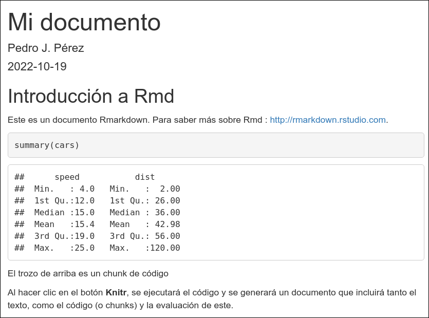
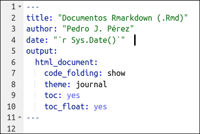
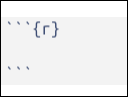
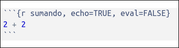
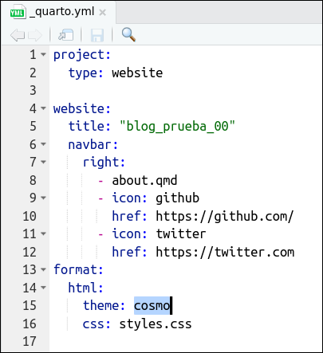
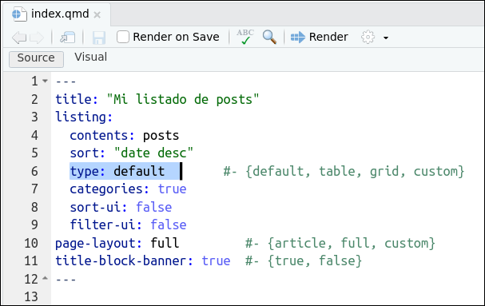
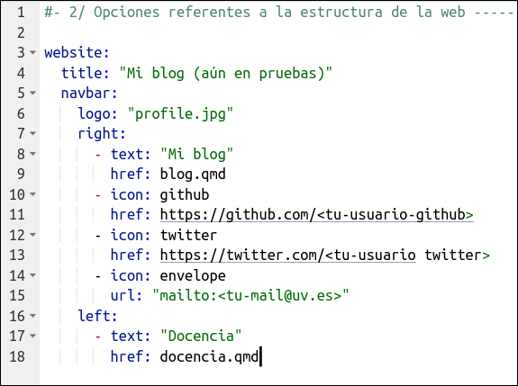
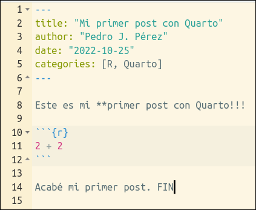
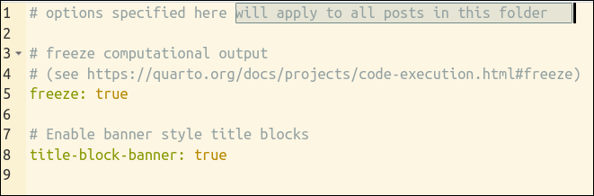

Intro a Quarto
(también haremos un blog)
![]()
9/11/22
1. Creación de un blog básico con Quarto
Objetivo: Aprender sobre Quarto mientras vamos creando una web/blog
Estructura de una web
Ejemplos de blogs (hechos con Quarto)
Mike Mahoney (el repo aqui)
Isabella Velásquez (el repo aqui)
Danielle Navarro (el repo aqui)
Jeff y Marc Dotson (el repo aqui)
Layton R blog (el repo aqui)
Más opciones:
¿Qué es Quarto?
Quarto is a multi-language, next generation version of R Markdown, with many new features and capabilities.
Puedes ver este video de 100 segundos
¿Qué es Quarto? (otra vez)
- Un nuevo sistema de publicación científica y técnica de código abierto basado en Pandoc
- Muy parecido a Rmarkdown, pero … no requiere R. Soporta lenguajes como Phyton, Julia y Observable.
Unifica las funcionalidades de varios paquetes del entorno Rmd como xaringan, bookdown, blogdown , …
Es … la “segunda generación de Rmarkdown”
Quarto utiliza Knitr para ejecutar el código R; así que es capaz de procesar también los ficheros .Rmd sin modificarlos
- Quarto no es un paquete, es un programa independiente, un CLI
Ventajas de Quarto
Proyecto en desarrollo activo … mientras que Rmarkdown …
Unifica algunas de las funcionalidades de Rmarkdown
Por ejemplo: Cross references, Call-outs, Advanced Layout (tb para imágenes), Extensiones, Interactividad, YAML inteligence, Quarto Pub, Divs, Spans
Para ver si estas ventajas merecen la pena para ti puedes leer a Occasional Divergences, Nick Tierney, Alison Hill, Danielle Navarro, o Stack Overflow
Matt Worthington (el repo aqui)
Wow, writing first paper using @quarto_pub and it is amazing; almost every pain point for academic writing in #rmarkdown has been fixed. Numbered equations? no problem. Citations? easy. Cross reference everything? Simple. Totally worth switching
— Dan Ovando (@DanOvand0) October 12, 2022
Setup para el taller
Vamos a trabajar con R (a través de RStudio) y Quarto
Si tienes RStudio 2022.07.1 +, ya tienes Quarto instalado
Instrucciones de instalación aquí
El taller está diseñado suponiendo que conocéis/usáis Rmarkdown
Refresh de Rmarkdown (.Rmd)
¿Qué es Rmarkdown? ¿Para qué sirve?
- Un “entorno” para hacer informes/publicaciones/transparencias REPRODUCIBLES con R.
Is an authoring framework for data science, combining your code, its results, and your prose. R Markdown documents are fully reproducible and support dozens of output formats, like PDFs, Word files, slideshows, and more.
- Con Rmd se pueden generar multitud de outputs. Por ejemplo, visita está galería o este listado
Una oda a Rmarkdown
- How Rmarkdown changed my life: charla de Rob Hyndman sobre su proceso hasta llegar a usar Rmarkdown para hacer sus documentos científicos y webs.
Documentos .Rmd tienen 3 partes
- Encabezamiento (yaml header)
- Trozos de código R (R chunks)
- Texto (narratives)
Un ejemplo
source code
output

(I) El encabezamiento o “yaml header”
Se (suele) poner al ppio del documento, entre estas marcas:
---En el yaml son MUY importantes los espacios y la indentación
Puedes aprender más sobre el
yamlen el manual de Pandoc
Otro ejemplo de yaml
(IIa) Código R (chunks)
- Para que
knitrsepa qué partes del .Rmd es código R, deben ir dentro de estas marcas:

Por ejemplo
- Cuando
knitrprocese el chunk, lo interpretará como código R y ejecutará las instrucciones y mostrará en el documento final el output generado por el chunk.
(IIb) Chunks: diferencias con Quarto
- Con
.qmd, se usa YAML style:echo: falsey, cada opción en una linea que empieza por#|
.Rmd

.qmd

- No hace falta chunk inicial, ahora se pueden poner las opciones de chunk en el YAML
.Rmd
.qmd

(III) Texto (narrativa)
Todo lo que no es
YAMLoCHUNKSde código, es TEXTO.El texto se escribe en Markdown (concretamente en Pandoc’s Markdown)
Sintaxis básica de markdown
- Aquí puedes ver (o recordar) la sintaxis básica para escribir en
markdown. Como ejemplo:

Cuando tengáis tiempo mirad este Workshop sobre Quarto. Awesome!!
Comenzamos el taller !!!! üíªü§û üí™üèº üí™üèº
Tarea 1.1: Hemos de crear la carpeta que contendrá nuestro blog.
La carpeta la creará Quarto, pero tenemos 2 formas de hacerlo:
A) Crear la carpeta (o Qproject) desde RStudio
En RStudio sigue la siguiente ruta de menús:
File > New Project > New Directory > Quarto BlogMejor si llamas a la carpeta:
blog_prueba_00
B) Usando un Qproject ya creado con RStudio Cloud
Tienes que ir aquí. Se abrirá Rstudio en el navegador con un Qproject llamado
blog_prueba_00.Has de tener cuenta en RStudio Cloud. Haz una copia permanente y trabaja sobre ella
De cualquiera de las 2 maneras acabaremos teniendo una carpeta con todo o necesario para crear un blog.
Contenido del Qproject

Los archivos importantes ahora son 3:
_quarto.yml: especifica la estructura (y apariencia) de la webindex.qmd: generará (y dará formato) a la “landing page” o Home. Esta página será un listado de páginas (un blog)about.qmd: una de la páginas del blog
Tarea 1.2: Generación del blog
Ir al cuadrante superior-derecha de RStudio, pinchar en la pestaña
Buildy pinchar enRender Website.De esta forma, se procesarán los archivos del Qproject y se creará el blog.
Podremos verlo en el cuadrante inferior-derecha de RStudio, concretamente en la pestaña
Viewer.
Contenido del Qproject (tras procesar el blog)

Se han creado 2 subcarpetas:
_sitey_freeze_sitees la carpeta que contiene el blog.
Ver el blog en local
_sitees la carpeta que contiene el blog. Veamos su contenidoLa página principal (o Home) de nuestro blog es el archivo
index.html.El archivo
index.htmlha sido generado por el ficheroindex.qmd.
Tarea 1.3: Ver el blog
Enseguida publicaremos el blog en Quartopub, pero antes vamos a verlo en local.
Para ello solo tienes que pinchar en el archivo
./blog_prueba_00/_site/index.htmlEse fichero es el que contiene la “Landing Page” o “Home” de nuestro blog.
Como ves el blog es muy sencillo, solo tiene 2 páginas:
la Home Page (que consiste en un listado de posts)
la página
About
Contenido de index.qmd
- El archivo
index.qmdgeneraindex.html, la página principal (o Home) de nuestro blog
Extensiones: ver el contenido del archivo index.qmd
Contenido del archivo index.qmd que genera a index.html:

Como vemos, el archivo
index.qmdno tiene contenido, sólo contiene unyamlo encabezamientoEse encabezamiento genera una lista (
listing:) con los contenidos (con los ficheros .qmd) que haya en la carpetaposts.Sí, has imaginado bien, en la carpeta
postses donde estarán los ficheros .qmd que generarán los postsEl resto del yaml son opciones para nuestro blog. Por ejemplo,
sort: "date desc"ordenará el listado de post de más reciente a más antiguo.Lo iremos viendo
Alojando el blog
Tarea 1.4: Alojar el blog en Quarto Pub
Para publicar nuestro blog en Quartopub sólo hay que:
teclear en la Terminal de RStudio (panel inferior-izquierda) lo siguiente:
Tras ejecutar lo anterior, se te pedirá que autorices en la Terminal.
Después se abrirá el navegador, tendrás que logearte en
Quarto Puby volverás a autorizar. Además te preguntarán el nombre del blog.
- Puedes ver aquí, como quedaría el blog una vez alojado en Internet.
Extensiones: el fichero _publish.yml
Si te fijas, tras haberse publicado el blog en “Quarto Pub”, se habrá creado un nuevo fichero en nuestro Qproject: es el fichero _publish.yml. En él solamente están los metadatos necesarios para publicar y actualizar nuestro blog.

Resumen (tutorial nº 1)
En este tutorial, la segunda parte del taller, hemos visto:
Como crear un Qproject con la estructura de carpetas y archivos necesaria para generar un blog básico
Hemos visto (de forma rápida) el contenido, los archivos, que hay en el Qproject.
El Qproject contiene 3 archivos que serán los importantes, los que trabajaremos en el próximo tutorial, concretamente:
_quarto_yml,index.qmdyabout.qmdHemos aprendido a generar el blog a través de RStudio, simplemente
Build > Render WebsiteHemos visto que el blog realmente se aloja en la carpeta
_sitey que la homepage esindex.htmlLa homepage del blog es un listado de post (lógicamente, es un blog!!)
La homepage (
index.html) es generada por el archivoindex.qmdEl archivo
index.qmdsolo tieneyamlHemos publicado el blog en Quarto Pub
2. Tuneado básico del blog
(2ª parte del tutorial)
¿Qué haremos en este tutorial?
En esta segunda parte del taller vamos a mejorar/tunear un poco nuestro blog. Nos servirá para afianzar nuestro conocimiento de la estructura de ficheros del blog
En este tutorial nº 2, para hacer un tuneado básico del blog, modificaremos 3 archivos, concretamente los archivos:
_quarto.yml,index.qmdyabout.qmd. Iremos archivo por archivoFinalmente modificaremos (un poco) el archivo
styles.cssEn el tutorial nº 6 se profundiza en el tuneado del blog
Archivo _quarto.yml

_quarto.yml
_quarto.ymlTarea 2.1: Modificar el contenido de _quarto.yml
Sustituye el contenido original del fichero
_quarto.ymlpor el contenido del siguiente chunk.Pon un título a tu blog(
title: "titulo-de-mi-blog")Pon tu e-mail, usuario de Github y cuenta de Twitter (
href:)
project:
type: website
output-dir: docs #- carpeta donde se generará el blog
website:
title: "Mi blog (aún en pruebas)"
navbar:
logo: "profile.jpg"
right:
- text: "About me"
href: about.qmd
- icon: github
href: https://github.com/<tu-usuario-github>
- icon: twitter
href: https://twitter.com/<tu-usuario-twitter>
- icon: envelope
url: "mailto:<tu-mail@alumni.uv.es>"
format:
html:
theme: flatly
css: styles.css
toc: true
highlight-style: a11ylinea 5: cambiamos el título del blog
lineas 21-26: modificamos el theme …, CSS, ….
Tarea 2.2: Volver a generar el blog
- Volvamos a crear el blog con
Build > Web page.
Archivo index.qmd

index.qmd
index.qmdDe momento, solo vamos a hacer cambios en la segunda linea: cambiaremos el título.
Fijaros que es un archivo especial: “sólo tiene yaml”
Tarea 2.3: Modificar el contenido de index.qmd
He cambiado la primera linea (title:) para poner un nombre a la página con el listado de posts.
También podemos añadir una descripción con description:.
Archivo about.qmd

about.qmd
about.qmdSi en el
yamlse activa la opciónabout:(linea 4), entonces puedes usar unas plantillas que Quarto tiene disponibles para crear About’s pages.Como puedes ver aquí hay 5 plantillas: jolla, trestles, solana, marquee y broadside.
Aquí tienes la documentación oficial sobre estas plantillas.
Tarea 2.4: Modificar el contenido de about.qmd
Antes he dicho que solo modificaríamos la linea 5, pero mejor si lo complementamos con algunas acciones más, como el tamaño de la foto y su forma, por eso he añadido 2 lineas tras
template:trestles.Lógicamente estaría bien que sustituyeses la foto: se trata de cambiar
profile.jpg, en la linea 3, por la ruta a tu foto.Abajo tienes el código:
---
title: Yo mismo
image: profile.jpg
about:
template: trestles #- {jolla, solana, ...}
image-width: 10em #- https://cybmeta.com/em-y-rem
image-shape: round #- rectangle, round, rounded
links:
- icon: twitter
text: Twitter
href: https://twitter.com
- icon: linkedin
text: LinkedIn
href: https://linkedin.com
- icon: github
text: Github
href: https://github.com
---
Hola, soy "Yo mismo".
Estoy intentando hacer mi primer blog con Quarto. No sé yo!!
En un ratito ya piloto Quarto y genero my blog!!! üôÇArchivo styles.css
- Puedes cambiar la apariencia estética del blog usando los
themespredefinidos en Quarto o puedes usar el archivostyles.css1
Resumen (tutorial nº 2)
En esta tercera parte del taller hemos aprendido a mejorar/tunear un poco nuestro blog.
Hemos modificado 3 archivos:
_quarto.yml: hemos modificado el título del blog y la estructura de la barra de navegación; concretamente hemos añadido una página nueva.index.qmd: construye la Home Page de nuestra web. La opciónlisting:hace que nuestra web es en realidad un blog.about.qmd: hemos utilizado las plantillas de Quarto para configurar nuestra About page.
Finalmente hemos modificado (mínimamente) el archivo
styles.css.
- Aquí puedes ver como quedaría el blog tras haber modificado
_quarto.yml,index.qmd,about.qmdystyles.css.
Práctica (tutorial nº 2)
En esta sección dedicaremos un tiempo a la práctica libre para que adaptes el blog a tus necesidades y gustos. Por ejemplo puedes probar:
- Modificar la apariencia del blog (realmente del listado de posts) jugando con las opciones que nos proporciona Quarto (
index.qmd). Gracias YAML inteligence!!
- Modificar la apariencia de la página About (
about.qmd)
Práctica 2.1: Modificar la apariencia del blog (index.qmd)
Se trata de cambiar las opciones predefinidas de tu archivo index.qmd
Con ello podremos cambiar la apariencia del listado de posts
Para ello tienes que ir jugando con las opciones que nos ha proporcionado la plantilla de Quarto en el fichero
index.qmd.la YAML inteligence te ayudará!! (vamos el autocompletado en el YAML)

Práctica 2.2: Modificar la página About (about.qmd)
Se trata de cambiar las opciones predefinidas de tu archivo about.qmd
Estaría bien que pusieses una foto tuya.
Poner los enlaces a tus redes sociales y email
Puedes adaptar el texto y dar algo de formato a la página.
---
title: Yo mismo
image: profile.jpg
about:
template: trestles #- {jolla, solana, ...}
image-width: 10em #- https://cybmeta.com/em-y-rem
image-shape: round #- rectangle, round, rounded
links:
- icon: twitter
text: Twitter
href: https://twitter.com
- icon: linkedin
text: LinkedIn
href: https://linkedin.com
- icon: github
text: Github
href: https://github.com
---
Hola, soy "Yo mismo".
Estoy asistiendo al taller **Mi primer blog con Quarto** impartido en el [I Congreso & XII Jornadas de Usuarios de R](http://r-es.org/12jr/){target="_blank"} celebradas en Córdoba (Spain), 23-25 de noviembre de 2022.
En un ratito ya piloto Quarto y genero my blog!!! üôÇ3. Convertir el blog en web personal
(3ª parte del tutorial)
¿Qué haremos en este tutorial?
Convertir nuestro blog en una web personal.
Haremos que la “landing page” o Home de nuestra web no sea una página con el listado de posts, sino que sea una página en la que se reciba a los futuros visitantes de nuestra web
Para ello solo tendremos que cambiar el nombre de dos ficheros y referenciar uno de ellos en
_quarto.yml.
Tarea 3.1: Renombrar el archivo index.qmd
Cambia el nombre del fichero
index.qmdablog.qmdAhora este archivo no está referenciado en
_quarto.yml, por lo que no se mostraría si hacemos un rebuild1.
Tarea 3.2: Incluir blog.qmd en la web
Para que
blog.qmd, la página que contiene el listado de posts, se muestre en nuestra web hay que refrenciarlo/incluirlo en_quarto.ymlSimplemente, tendríamos que modificar las lineas 8 y 9 que ahora están referenciando al fichero
about.qmd. Por ejemplo podríamos dejar las lineas 8 y 9 como se ve abajo (a la derecha):

#- 2/ Opciones referentes a la estructura de la web -----------------
website:
title: "Mi blog (aún en pruebas)"
navbar:
logo: "profile.jpg"
right:
- text: "Mi blog"
href: blog.qmd
- icon: github
href: https://github.com/<tu-usuario-github>
- icon: twitter
href: https://twitter.com/<tu-usuario twitter>
- icon: envelope
url: "mailto:<tu-mail@alumni.uv.es>"- Aún no podemos refrescar la web porque ahora no tenemos archivo
index.qmd.
Tarea 3.3: Renombrar el archivo about.qmd
Cambia el nombre del fichero
about.qmdaindex.qmd, con lo que pasará ser nuestra “landing page”.Como el antiguo fichero
aboutcontenía nuestra foto parece que es un buen candidato a ser nuestra “Home”
Tarea 3.4: Hacemos un rebuild de la web
Ahora ya tenemos fichero
index.qmd, por lo que ya podemos hacer un rebuild de nuestra web y veremos la nueva estructura de nuestra web, con una foto nuestra en la “landing page”.Para ello:
Build > Render Websiteen RStudio.
4. Workflow: ¿cómo crear un post?
(4ª parte del tutorial)
¿Qué haremos en este tutorial?
Ver como podemos iniciar un nuevo post
(podemos marcar post todavía no acabados con
draft: trueen el yaml del post)
¿Donde están los posts del blog?
Los ficheros
.qmdque generan los posts están en la carpetaposts(de nuestro Qproject que genera el blog).Cada post está en una carpeta diferente1:
- Veamos (en la siguiente slide) el contenido de
./posts/welcome/
Contenido de cada subcarpeta de ./posts/
- Por ejemplo de
./posts/welcome/

welcome que genera el post titulado “Welcome to my blog”
index.qmd”Tarea 4.1: Creando un nuevo post
Crea una nueva subcarpeta en
./posts/Ponle nombre, por ejemplo: “my-primer-post”
Copia en la carpeta que hemos creado el contenido de la carpeta de uno de los 2 posts. Por ejemplo copia los 2 archivos que hay en
./posts/welcome/y pégalos en./posts/my-primer-post/; es decir, pegamos el archivoindex.qmdytumbnail.jpgen nuestra nueva carpeta.Vuelve a regenerar el blog:
Build > Render Websitey verás que ahora nuestro blog ya tiene tres posts.
Tarea 4.2: Modificando el tercer post
- Modifica el contenido de
/.posts/my-primer-post/index.qmd. Por ejemplo, puedes dejarlo así:
---
title: "Mi primer post con Quarto"
author: "Pedro J. Pérez"
date: "2022-10-25"
categories: [R, quarto]
image: "thumbnail.jpg"
---
Este es mi **primer post** con Quarto!!!!
```{r}
sqrt(2 + 2)
```
Voy a poner una imagen:

Acabé con mi primer post. FIN
Sustituye
thumbnail.jpgpor otro archivoLa opción de yaml (linea 6):
image: "thumbnail.jpg"nos permite elegir la imagen que acompañara al post en la listing page.Vuelve a regenerar el blog:
Build > Render Website
Resumen (tutorial nº 4)
- En esta cuarta parte del taller hemos visto como podemos generar/escribir nuevos posts para nuestro blog: solo hay replicar una de las carpetas de anteriores posts y cambiarle el nombre.
- Hemos visto como cambiar la imagen que acompaña a los posts en la “listing page”.
- Recuerda que podemos marcar un post con
draft: trueen el yaml del post.
- En el siguiente tutorial veremos en profundidad las posibilidades que nos ofrece Quarto para escribir nuestros posts.
5. Escribiendo posts: practicando con Quarto
(5ª parte del tutorial)
¿Qué haremos en este tutorial?
Aprender a escribir nuestro posts con Quarto: con ficheros
.qmdRepasaremos las 3 partes de los documentos
.qmd: yaml, texto, chunksAdemás veremos: layout
Aprender a utilizar algunos truquillos de Quarto
Advertencia
Voy a suponer que los asistentes al taller, y posibles lectores de estos tutoriales, conocen Rmarkdown y han escrito algún documento .Rmd. En ese caso, el paso de .Rmd a .qmd es sencillo.
En cualquier caso, aquí tienes unas FAQ’s para usuarios de .Rmd que se preguntan si pasarse a Quarto, y aquí unas slides sobre las diferencias entre .qmd y .Rmd.
Aquellos que no sepan qué es Rmarkdown pueden empezar por aquí o aquí.
Ficheros .qmd
- Los ficheros
.qmdtienen 3 partes: YAML, texto y chunks de código.

- Veámoslas una a una
YAML: ideas importantes
- El encabezamiento o YAML sirve para fijar opciones y metadatos de nuestro documento.
- El
YAMLserá procesado varias veces durante el procesado del documento: es leído por Quarto, knitr y Pandoc e influirá en el output final.
- El hecho de estar trabajando dentro de un Qproject nos da mucha versatilidad a la hora de especificar el YAML de nuestros documentos
.qmd. Documentación oficial aquí
El yaml de un post se puede especificar en 3 niveles
Nivel proyecto:todo Qproject tiene archivo
_quarto.yml. Todo documento que se procese dentro del proyecto, heredará los metadatos definidos en_quarto.yml.Nivel carpeta: si en una carpeta existe un documento
_metadata.yml, los documentos de esa carpeta heredan sus metadatos. La carpeta./posts/de un blog suele tener un archivo_metadata.yml.Nivel documento: En el yaml del propio documento
.qmd
Si hay conflictos prevalecen las opciones del nivel documento, luego nivel carpeta y finalmente nivel proyecto.
Documentación oficial de Quarto con las principales opciones que se pueden fijar en el YAML para documentos html: aquí y aquí
YAML: tal como lo tenemos ahora
Abajo el contenido del fichero _quarto.yml tal y como lo tenemos ahora en nuestro blog. Solo he añadido 3 comentarios para diferenciar entre secciones:

Abajo el, contenido del fichero ./posts/_metadata.yml. Afectará a todos los ficheros .qmd que haya en la carpeta ./posts/


YAML: NIVEL PROYECTO (opciones en _quarto.yml)
En _quarto.yml se suelen poner opciones referentes a 3 aspectos:
- linea 4: podemos elegir la carpeta de destino de nuestro blog
- linea 5: podemos cambiar el render directory de los
.qmd
Documentación oficial aquí.
#- 2/ Opciones referentes a la estructura de la web -----------------
website:
title: "Mi blog (aún en pruebas)"
favicon: profile.jpg
#site-url: https://....
#repo-url: https://....
open-graph: true #-https://quarto.org/docs/websites/website-tools.html#twitter-cards
twitter-card:
creator: "@tu-usuario-twitter"
card-style: summary_large_image
navbar:
logo: "profile.jpg"
#background: primary #- pink
right:
- text: "About me"
href: about.qmd
- icon: github
href: https://github.com/<tu-usuario-github>
- icon: twitter
href: https://twitter.com/<tu-usuario-twitter>
- icon: envelope
url: "mailto:<tu-mail@uv.es>"
left:
- icon: house-door
href: index.html
- text: "Docencia"
href: docencia.qmd
page-footer:
left: "© 2022 Pedro J. Pérez"
center: "Hecho con [Quarto](https://quarto.org)"
right:
- icon: github
href: https://github.com/<tu-usuario-github>
- icon: twitter
href: https://twitter.com/<tu-usuario-twitter>
- icon: envelope
url: "mailto:<tu-mail>@uv.es"Como ves, se añadirían elementos como:
lineas 28 a 37: se añade un pie de página al blog
lineas 24 y 25: Hemos añadido un elemento a la
navbarconcretamente el iconoHome. La documentación oficial para elementos de navegación está aquílinea 4: añadimos un favicon
lineas 5 y 6: el url de la web y del repo en Github
lineas 7-10: elementos de redes sociales. La documentación oficial para estos elementos esta aquí
Un ejemplo “completito” de _quarto.yml
Si quieres ver un documento _quarto.yml completito, ve aquí. Pertenece a la web de Quarto.
project:
type: website
output-dir: _site
resources:
- "/docs/download/_download.json"
- "/docs/download/_prerelease.json"
- "/_redirects"
website:
title: "Quarto"
image: "quarto.png"
favicon: "favicon.png"
google-analytics: "G-FV9Z7SDZ0M"
open-graph: true
twitter-card: true
site-url: https://quarto.org
repo-url: https://github.com/quarto-dev/quarto-web
repo-actions: [edit, issue]
page-navigation: true
search:
algolia:
index-name: prod_QUARTO
application-id: ZPJB5I1QN7
search-only-api-key: 41be6c1e0a7fea4a51b107810facf577
analytics-events: true
show-logo: true
page-footer:
left: |
Proudly supported by
[{fig-alt="RStudio" width=65px}](https://www.rstudio.com)
center:
- text: "About"
href: about.qmd
- text: "FAQ"
href: docs/faq/index.qmd
- text: "License"
href: license.qmd
- text: "Trademark"
href: trademark.qmd
right:
- icon: twitter
href: https://twitter.com/quarto_pub
aria-label: Quarto Twitter
- icon: github
href: https://github.com/quarto-dev/quarto-cli
aria-label: Quarto GitHub
navbar:
background: light
logo: quarto.png
logo-alt: "Quarto logo."
title: false
collapse-below: lg
left:
- text: "Overview"
href: index.qmd
- text: "Get Started"
href: docs/get-started/index.qmd
- text: "Guide"
href: docs/guide/index.qmd
- text: Extensions
href: docs/extensions/index.qmd
- text: "Reference"
href: docs/reference/index.qmd
- text: "Gallery"
href: docs/gallery/index.qmd
- text: "Blog"
href: docs/blog/index.qmd
- text: "Help"
menu:
- text: "Report a Bug"
icon: "bug"
href: "https://github.com/quarto-dev/quarto-cli/issues"
- text: "Ask a Question"
icon: "chat-right-text"
href: "https://github.com/quarto-dev/quarto-cli/discussions"
- text: "FAQ"
icon: "question-circle"
href: docs/faq/index.qmd
right:
- icon: twitter
href: https://twitter.com/quarto_pub
aria-label: Quarto Twitter
- icon: github
href: https://github.com/quarto-dev/quarto-cli
aria-label: Quarto GitHub
sidebar:
- id: get-started
title: "Get Started"
style: "floating"
collapse-level: 2
align: left
contents:
- docs/get-started/index.qmd
- text: "Tutorial: Hello, Quarto"
href: docs/get-started/hello/
- text: "Tutorial: Computations"
href: docs/get-started/computations/
- text: "Tutorial: Authoring"
href: docs/get-started/authoring/
- id: guide
collapse-level: 1
contents:
- text: "Guide"
href: docs/guide/index.qmd
- section: "Authoring"
contents:
- docs/authoring/markdown-basics.qmd
- docs/authoring/figures.qmd
- docs/authoring/tables.qmd
- docs/authoring/diagrams.qmd
- docs/authoring/videos.qmd
- docs/authoring/callouts.qmd
- docs/authoring/article-layout.qmd
- section: "Scholarly Writing"
contents:
- docs/authoring/title-blocks.qmd
- docs/authoring/footnotes-and-citations.qmd
- docs/authoring/cross-references.qmd
- docs/authoring/create-citeable-articles.qmd
- docs/authoring/appendices.qmd
- section: "Computations"
contents:
- docs/computations/python.qmd
- docs/computations/r.qmd
- docs/computations/julia.qmd
- docs/computations/ojs.qmd
- docs/computations/execution-options.qmd
- docs/computations/parameters.qmd
- section: "Tools"
contents:
- docs/tools/jupyter-lab.qmd
- docs/tools/rstudio.qmd
- docs/tools/vscode.qmd
- docs/tools/text-editors.qmd
- section: "Visual Editor"
contents:
- text: Editor Basics
href: docs/visual-editor/index.qmd
- docs/visual-editor/technical.qmd
- docs/visual-editor/content.qmd
- docs/visual-editor/options.qmd
- docs/visual-editor/markdown.qmd
- section: "Documents"
contents:
- section: "HTML"
contents:
- docs/output-formats/html-basics.qmd
- docs/output-formats/html-code.qmd
- docs/output-formats/html-themes.qmd
- docs/output-formats/html-publishing.qmd
- section: "PDF"
contents:
- docs/output-formats/pdf-basics.qmd
- docs/output-formats/pdf-engine.qmd
- section: "MS Word"
contents:
- docs/output-formats/ms-word.qmd
- docs/output-formats/ms-word-templates.qmd
- section: "Markdown"
contents:
- docs/output-formats/gfm.qmd
- docs/output-formats/hugo.qmd
- docs/output-formats/docusaurus.qmd
- docs/output-formats/all-formats.qmd
- section: "Presentations"
contents:
- text: "Overview"
href: docs/presentations/index.qmd
- section: docs/presentations/revealjs/index.qmd
contents:
- text: "Reveal Basics"
href: docs/presentations/revealjs/index.qmd
- docs/presentations/revealjs/presenting.qmd
- docs/presentations/revealjs/advanced.qmd
- docs/presentations/revealjs/themes.qmd
- docs/presentations/powerpoint.qmd
- docs/presentations/beamer.qmd
- section: "Websites"
href: docs/websites/website-basics.qmd
contents:
- docs/websites/website-basics.qmd
- docs/websites/website-navigation.qmd
- docs/websites/website-blog.qmd
- docs/websites/website-search.qmd
- docs/websites/website-tools.qmd
- docs/websites/website-about.qmd
- section: "Listing Pages"
href: docs/websites/website-listings.qmd
contents:
- docs/websites/website-listings.qmd
- docs/websites/website-listings-custom.qmd
- section: "Books"
href: docs/books/book-basics.qmd
contents:
- docs/books/book-basics.qmd
- docs/books/book-structure.qmd
- docs/books/book-crossrefs.qmd
- text: "Customizing Output"
href: docs/books/book-output.qmd
- section: "Interactivity"
contents:
- text: "Overview"
href: docs/interactive/index.qmd
- section: docs/interactive/ojs/index.qmd
contents:
- text: "Introduction"
href: docs/interactive/ojs/index.qmd
- docs/interactive/ojs/libraries.qmd
- docs/interactive/ojs/data-sources.qmd
- docs/interactive/ojs/ojs-cells.qmd
- docs/interactive/ojs/shiny.qmd
- docs/interactive/ojs/code-reuse.qmd
- section: "Examples"
contents:
- docs/interactive/ojs/examples/penguins.qmd
- docs/interactive/ojs/examples/sunburst.qmd
- docs/interactive/ojs/examples/arquero.qmd
- docs/interactive/ojs/examples/population.qmd
- docs/interactive/ojs/examples/noaa-co2.qmd
- docs/interactive/ojs/examples/github.qmd
- docs/interactive/ojs/examples/layout.qmd
- section: "Shiny"
contents:
- text: "K-Means"
href: https://jjallaire.shinyapps.io/kmeans-shiny-ojs/
- text: "Binning"
href: https://jjallaire.shinyapps.io/binning-shiny-ojs/
- text: "Data Binding"
href: https://jjallaire.shinyapps.io/data-shiny-ojs/
- text: "Covid Map"
href: https://jjallaire.shinyapps.io/covid19-bicartogram/
- section: docs/interactive/shiny/index.qmd
contents:
- text: "Introduction"
href: docs/interactive/shiny/index.qmd
- docs/interactive/shiny/running.qmd
- docs/interactive/shiny/execution.qmd
- docs/interactive/shiny/resources.qmd
- section: "Examples"
contents:
- text: "Old Faithful"
href: https://jjallaire.shinyapps.io/shiny-old-faithful/
- text: "K-Means"
href: https://jjallaire.shinyapps.io/shiny-k-means/
- text: "Diamonds"
href: https://jjallaire.shinyapps.io/shiny-diamonds/
- section: "Widgets"
contents:
- docs/interactive/widgets/jupyter.qmd
- docs/interactive/widgets/htmlwidgets.qmd
- docs/interactive/layout.qmd
- section: "Publishing"
contents:
- docs/publishing/index.qmd
- docs/publishing/quarto-pub.qmd
- docs/publishing/github-pages.qmd
- docs/publishing/rstudio-connect.qmd
- docs/publishing/netlify.qmd
- docs/publishing/other.qmd
- text: "Publishing with CI"
href: docs/publishing/ci.qmd
- section: "Projects"
contents:
- docs/projects/quarto-projects.qmd
- docs/projects/code-execution.qmd
- docs/projects/profiles.qmd
- docs/projects/environment.qmd
- docs/projects/scripts.qmd
- docs/projects/virtual-environments.qmd
- section: "Advanced"
contents:
- docs/authoring/includes.qmd
- docs/authoring/variables.qmd
- docs/output-formats/page-layout.qmd
- docs/authoring/language.qmd
- docs/authoring/conditional.qmd
- docs/extensions/nbfilter.qmd
- id: extensions
title: "Extensions"
contents:
- "---"
- section: docs/extensions/index.qmd
contents:
- text: "Shortcodes & Filters"
href: docs/extensions/listing-filters.qmd
- text: "Journal Articles"
href: docs/extensions/listing-journals.qmd
- text: "Custom Formats"
href: docs/extensions/listing-formats.qmd
- text: "Revealjs Extensions"
href: docs/extensions/listing-revealjs.qmd
- docs/extensions/managing.qmd
- "---"
- section: docs/extensions/creating.qmd
contents:
- text: "Overview"
href: docs/extensions/creating.qmd
- docs/extensions/lua.qmd
- docs/extensions/lua-api.qmd
- text: "Distribution"
href: docs/extensions/distributing.qmd
- "---"
- text: "Shortcodes"
href: docs/extensions/shortcodes.qmd
- text: "Filters"
href: docs/extensions/filters.qmd
- section: "Journal Articles"
href: docs/journals/formats.qmd
contents:
- docs/journals/formats.qmd
- docs/journals/templates.qmd
- docs/journals/authors.qmd
- docs/extensions/formats.qmd
- docs/extensions/revealjs.qmd
- docs/extensions/project-types.qmd
- docs/extensions/starter-templates.qmd
- id: reference
title: "Reference"
contents:
- text: "Reference"
href: docs/reference/index.qmd
- section: "Formats"
contents:
- text: "HTML"
href: docs/reference/formats/html.qmd
- text: "PDF"
href: docs/reference/formats/pdf.qmd
- text: "MS Word"
href: docs/reference/formats/docx.qmd
- text: "OpenOffice"
href: docs/reference/formats/odt.qmd
- text: "ePub"
href: docs/reference/formats/epub.qmd
- section: "Presentations"
contents:
- text: "Revealjs"
href: docs/reference/formats/presentations/revealjs.qmd
- text: "PowerPoint"
href: docs/reference/formats/presentations/pptx.qmd
- text: "Beamer"
href: docs/reference/formats/presentations/beamer.qmd
- section: "Markdown"
contents:
- text: "GitHub"
href: docs/reference/formats/markdown/gfm.qmd
- text: "CommonMark"
href: docs/reference/formats/markdown/commonmark.qmd
- text: "Markua"
href: docs/reference/formats/markdown/markua.qmd
- section: "Wikis"
contents:
- text: "MediaWiki"
href: docs/reference/formats/wiki/mediawiki.qmd
- text: "DokuWiki"
href: docs/reference/formats/wiki/dokuwiki.qmd
- text: "ZimWiki"
href: docs/reference/formats/wiki/zimwiki.qmd
- text: "Jira Wiki"
href: docs/reference/formats/wiki/jira.qmd
- text: "XWiki"
href: docs/reference/formats/wiki/xwiki.qmd
- section: "More Formats"
contents:
- text: "JATS"
href: docs/reference/formats/jats.qmd
- text: "Jupyter"
href: docs/reference/formats/ipynb.qmd
- text: "ConTeXt"
href: docs/reference/formats/context.qmd
- text: "RTF"
href: docs/reference/formats/rtf.qmd
- text: "reST"
href: docs/reference/formats/rst.qmd
- text: "AsciiDoc"
href: docs/reference/formats/asciidoc.qmd
- text: "Org-Mode"
href: docs/reference/formats/org.qmd
- text: "Muse"
href: docs/reference/formats/muse.qmd
- text: "GNU TexInfo"
href: docs/reference/formats/texinfo.qmd
- text: "Groff Man Page"
href: docs/reference/formats/man.qmd
- text: "Groff Manuscript"
href: docs/reference/formats/ms.qmd
- text: "Haddock markup"
href: docs/reference/formats/haddock.qmd
- text: "OPML"
href: docs/reference/formats/opml.qmd
- text: "Textile"
href: docs/reference/formats/textile.qmd
- text: "DocBook"
href: docs/reference/formats/docbook.qmd
- text: "InDesign"
href: docs/reference/formats/icml.qmd
- text: "TEI Simple"
href: docs/reference/formats/tei.qmd
- text: "FictionBook"
href: docs/reference/formats/fb2.qmd
- section: "Code Cells"
contents:
- text: "Jupyter"
href: docs/reference/cells/cells-jupyter.qmd
- text: "Knitr"
href: docs/reference/cells/cells-knitr.qmd
- text: "Observable"
href: docs/reference/cells/cells-ojs.qmd
- section: "Projects"
contents:
- text: "Options"
href: docs/reference/projects/options.qmd
- text: "Websites"
href: docs/reference/projects/websites.qmd
- text: "Books"
href: docs/reference/projects/books.qmd
- section: "More"
contents:
- text: "Dates"
href: docs/reference/dates.qmd
- text: "Globs"
href: docs/reference/globs.qmd
- text: "Citations"
href: docs/reference/metadata/citation.qmd
bibliography: references.bib
format:
html:
toc: true
theme:
light: [cosmo, theme.scss]
code-copy: true
code-overflow: wrap
css: styles.css
include-after-body: js.html
filters:
- filters/tools-tabset.lua
freeze: true
editor: visual
profile:
group:
- [rc, prerelease]Tarea 5.1: Modificar _quarto.yml
- Tenemos que dejar el archivo
_quarto.ymlasí:
# 1/ Opciones referentes al proyecto ----------------------------
project:
type: website
output-dir: _site
#- 2/ Opciones referentes a la estructura de la web -----------------
website:
title: "Mi blog (aún en pruebas)"
navbar:
logo: "profile.jpg"
#background: primary #- pink
right:
- text: "About me"
href: about.qmd
- icon: github
href: https://github.com/<tu-usuario-github>
- icon: twitter
href: https://twitter.com/<tu-usuario-twitter>
- icon: envelope
url: "mailto:<tu-mail@uv.es>"
left:
- icon: house-door
href: index.html
page-footer:
left: "© 2022 Pedro J. Pérez"
center: "Hecho con [Quarto](https://quarto.org)"
right:
- icon: github
href: https://github.com/<tu-usuario-github>
- icon: twitter
href: https://twitter.com/<tu-usuario-twitter>
- icon: envelope
url: "mailto:<tu-mail>@alumni.uv.es"
#- 3/ Opciones referentes al formato de salida ---------------------
format:
html:
theme: flatly
css: styles.css
toc: true
highlight-style: a11y YAML nivel carpeta
- Abajo el, contenido del fichero
./posts/_metadata.ymlde nuestro blog
YAML nivel carpeta
Tarea 5.2: Modificar ./posts/_metadata.yml
- Tenemos que dejar el archivo
./posts/_metadata.ymlasí:
# IMPORTANTE: options specified here will apply to all posts in this folder
# freeze: controla la ejecución de los .qmd durante un global project render
# https://quarto.org/docs/projects/code-execution.html#freeze)
freeze: auto #- {false, true, auto}
#- Quarto incluye un title-block al principio de los artículos con elementos como: title, subtitle, authors, date, doi, and abstract.
# title-block-banner: pone un banner en el title-block: pondrá el title, subtitle, description, y categories dentro del banner
# https://quarto.org/docs/authoring/title-blocks.html#title-banners
title-block-banner: true #- {true, false, "#FFDDFF", "image.jpg"}
# title-block-style: modifica el estilo del title-block
# https://quarto.org/docs/authoring/title-blocks.html
title-block-style: default #- {default, plain, none}
# tb se puede especificar el color del texto dentro del banner
title-block-banner-color: redIMPORTANTE: las opciones que especifiques en _metadata.yml afectarán a todos los .qmd de la carpeta.
freeze (linea 5): {false, true, auto}controla la ejecución de los .qmd durante el procesado completo del Qproject. Documentación aquí.title-block-banner (linea 11): {true, false, "#FFDDFF", "image.jpg"}controla la presencia y apariencia de los “banners” para dar más importancia a los títulos de los posts. Puedes controlar el color, incluso poner una imagen. Documentación aquí.title-block-style (linea 15): {default, plain, none}modifica el estilo del title-blocktitle-block-banner-color(linea 18): {black, "#FFDDFF"}controla el color del título del post
YAML: nivel documento
Tarea 5.3: Modificar encabezamiento de ./posts/my-primer-post/index.qmd
- Tenemos que dejar el archivo
./posts/my-primer-post/index.qmdasí:
---
title: "Mi primer post con Quarto"
description: |
Estoy aprendiendo Quarto
author:
- name: Pedro J. Pérez
url: https://www.wikidata.org
affiliation: Universitat de València
affiliation-url: https://www.uv.es
orcid: 0000-xxxx
date: "2022-10-25"
categories: [R, quarto]
#title-block-banner: true #- {true, false }
title-block-banner: thumbnail.jpg
title-block-banner-color: green
---
Este es mi **primer post** con Quarto!!!!
```{r}
sqrt(2 + 2)
```
Voy a poner una imagen:

Acabé con mi primer post. FIN
Sustituye
thumbnail.jpgpor otro archivoVuelve a regenerar el blog:
Build > Render Website
Texto (o narrativas)
Se escribe (al igual que
.Rmd) en markdown. Aquí la documentación oficial de Quarto.Sintaxis básica de
markdown
CHUNKS
Comportamiento similar a los documentos .Rmd. La documentación oficial está aquí
Principales diferencias con .Rmd
En ficheros
.qmd, las opciones de los chunks se pueden especificar globalmente en el YAML y a nivel individual en cada uno de los chunks.En los chunks individuales ahora se se utiliza la sintaxis YAML (
key: value) en lineas dentro del chunk que empiezan con#|. Por ejemplo:

CHUNKS
Las principales opciones son: echo, eval, warning, error, output e include. Aquí la documentación oficial.
echo: además de los típicos true y false, ahora incorpora un nuevo valorfencedque facilita mostrar las marcas de los chunks en el documento final. Documentación aquí.Además, si usamos
knitrpara ejecutar los chunks, entonces podemos usar todas las opciones nativas deknitr, como: collapse, fig.width, comment, etc … Más información aquí. Un ejemplo:
Hay más opciones para los chunks. Por ejemplo:
hacer folding code con
#| code-fold: truesi el código es muy largo, puedes usar
#| code-overflow: wrapy#| code-overflow: scrollpuedes hacer que se muestren los números de linea con
#| code-line-numbers: true
La documentación oficial la tienes aquí.
Elementos básicos para escribir
Para escribir en Markdown, además de texto, tenemos los siguientes elementos básicos:
Links (documentación aquí)
Listas (documentación aquí)
Tablas (documentación aquí)
Código (documentación aquí)
Ecuaciones (documentación aquí). Editor de ecuaciones aquí o aquí.
El editor visual facilita la introducción de estos elementos en tus documentos. En esta charla de Mine Çetinkaya-Rundel se aprecia fácilmente la utilidad del editor visual.
Más elementos para “escribir”
Además de los elementos básicos de escritura que nos ofrece la sintaxis básica de markdown, Quarto nos ofrece más posibilidades. Por ejemplo:
Callout blocks (documentación aquí)
Divs & spans (documentación aquí)
Extensiones (documentación aquí) . Listado de extensiones oficiales aquí
Veamos algunos de estos elementos con un poco de detalle. Después lo recordaremos con una Práctica.
Layouts
Además de yaml, texto y chunk, para escribir con Quarto conviene conocer la estructura o layout de los artículos que se generan con él.
Los “artículos” tienen un body, un margin y un área para las sidebars, que en nuestro caso contiene el TOC1.
Usando divs se puede hacer que alguna sección de nuestra página ocupe un espacio mayor al habitual; es decir, mayor al espacio habitualmente reservado para el body.
Veamos las posibilidades que tenemos de layout con este post
Extensiones
Una de las novedades de Quarto es la posibilidad de usar extensiones. Las extensiones se escriben en lenguaje Lua.
Para ver como instalar y usar extensiones vamos a ir, otra vez, a otro de los post del blog del taller: concretamente aquí
Imágenes
Conocemos la sintaxis básica para insertar imágenes
; ahora veremos posibilidades más avanzadasVeamos como insertar imágenes con este post del blog del taller.
Resumen (tutorial nº 5)
La quinta parte del taller se ocupa de la escritura de posts para el blog.
Los posts se han de escribir en formato
.qmd; por lo tanto, se repasan los fundamentos “teóricos” necesarios para escribir este tipo de documentos.Nos apoyamos en nuestro conocimiento previo de la sintaxis Rmarkdown.
Se repasan las posibilidades de configurar los documentos por medio de los 3 niveles de YAML que pueden afectar a un documento.
Los 3 YAML’s son: Nivel proyecto (
_quarto.yml), nivel carpeta (_metadata.yml) y nivel documento (en el propio encabezamiento del archivo)El texto en ficheros
.qmdes muy similar al de los documentos.qmd. Aparecen algunos elementos nuevos como los Call-outs.El código sí presenta novedades: nueva sintaxis con
#|y posibilidad de determinar opciones de los chunks en el YAML.Para poder escribir en
.qmdhay que practicar. Lo haremos con una tarea donde veremos, entre otras cosas:Algunas de las opciones de layout.
Ver como instalar y usar extensiones.
Opciones avanzadas para insertar imágenes.
Práctica 5.1: Crear un post para tu blog con la siguiente plantilla.
Vamos a crear un nuevo post para practicar algunos de los elementos de escritura que hemos visto. Para ello:
Crea una nueva subcarpeta en la carpeta
./posts/. Por ejemplo llámala:./posts/my-segundo-posty copia allí los documentos que haya en la carpeta de otro blog. Es decir, en la nueva subcarpeta que has creado debe haber un ficheroindex.qmdy una imágenthumbnail.jpg.Sustituye el contenido del archivo
index.qmdpor el contenido del siguiente chunk y haz un render de./posts/my-segundo-post/index.qmdpara ver como quedaría una vez procesado.
Contenido para sustituir en ./posts/my-segundo-post/index.qmd
---
title: "Mi Segundo post con Quarto"
author: "Nosotros"
date: 2022-10-25
categories: [R, quarto, ejemplos]
image: "thumbnail.jpg"
#subtitle: |
# Practicando con Quarto
description: |
Estamos viendo algunos elementos para escribir con Quarto.
---
Este ya es mi segundo post con Quarto. En él voy a hacer lo siguiente:
## Insertar 2 imágenes side-by-side
## Inserta un tweet
## Inserta un `tab-set`
## Inserta un call-out
## Inserta un gráfico en el margen
<br>
Prueba superada!!
Acabé con mi segundo post. FIN
Las soluciones a la Práctica están aquí
6. Tuneado del blog
(6ª parte del tutorial)
¿Qué haremos en este tutorial?
Ver distintas opciones para adaptar el blog a nuestras necesidades
En concreto veremos 3 formas de hacerlo: a través de opciones de Quarto en el yaml, con CSS y con SASS
Intro
- Quarto viene preparado con diferentes
Bootstrap themesdel proyecto Bootswatch project que le dan a nuestro blog una apariencia profesional y cuidada.
Creo que es mejor comenzar con un blog sencillo usando las plantillas (o themes) que nos ofrece Quarto pero, si queremos modificar la apariencia de nuestro blog, podemos hacerlo de 3 formas:
Utilizando las opciones disponibles en Quarto para el
yamlUtilizando CSS
Utilizando SASS
1. Utilizando opciones del YAML
En el tutorial nº 6 repasamos las distintas opciones que tenemos disponibles para poder cambiar a través de opciones en los YAML’s (recuerda los 3 niveles).
Aquí solo pondré la documentación relevante junta y destacaré algunas de las opciones disponibles.
Documentación oficial
(sobre opciones disponibles en los YAML’s)
Algunas opciones de YAML
Algunas opciones de YAML (lang)
Si te has fijado, los metadatos de los documentos aparecen en inglés.
Por ejemplo, pone “Author” en lugar de “Autor” o “Autora”.
Hagamos algunos cambios
- Si quisiéramos cambiar específicamente la opción de autor, tendríamos que poner en el YAML:
Podemos cambiar todas las opciones especificando en el YAML
lang: es.La documentación oficial está aquí y aquí todos los elementos que se pueden modificar. Y aquí los ficheros específicos para diferentes idiomas. Aquí el documento para el castellano.
Si quisieras usar tu propio documento tendrías que poner en el YAML:
language: custom.yml(lógicamente el ficherocustom.ymltendría que existir y estar en la ruta correcta).¿Probamos a hacerlo?
Otras opciones para tunear desde el YAML
TOC: es importante tenerlo a nuestro gusto. Aquí tienes las opciones que puedes ajustar con opciones en el yaml
Chunks: aquí tienes las opciones que puedes ajustar desde el YAML
Resizing de los thumbnails. Un gist para hacerlo.
Algunas opciones de tuneado que puedes implementar desde el YAML. Prueba a poner estas opciones en el archivo
_quarto.yml. Nuestro blog empeorará bastante. Más opciones aquí.
2. Utilizando CSS
La apariencia visual del blog puede cambiarse utilizando CSS.
Veamos un ejemplo con el siguiente post
Publicando el blog
La documentación oficial de Quarto.
Si lo publicamos en Quarto Pub, ejecutar en la Terminal:
quarto publish quarto-pubEn Github Pages